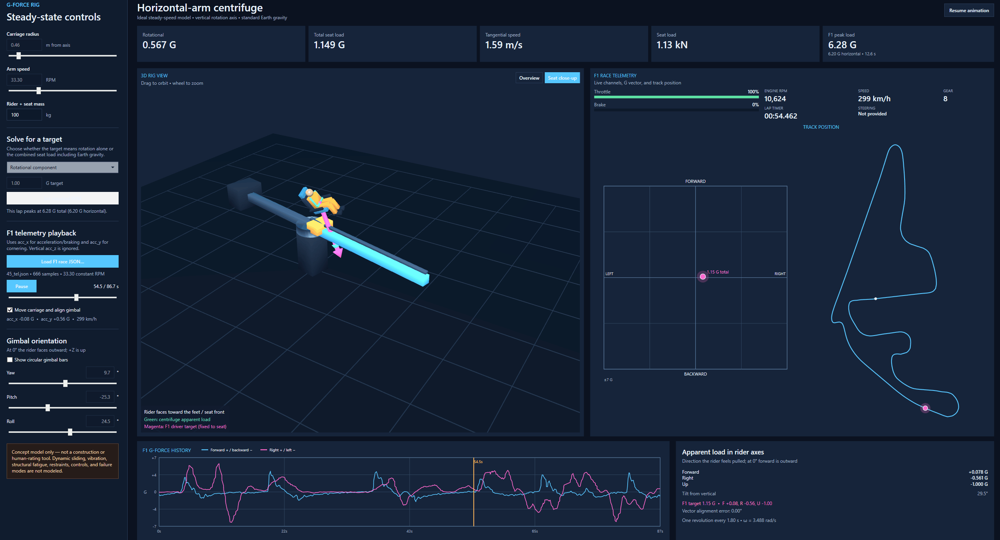

Simulation / Windows desktop
GForceSimSim
Exploring how a rotating arm and an adjustable seat could reproduce the direction and magnitude of a racing driver's apparent G-force.
C# / .NET / WPF / JSON telemetry

- Load a telemetry lap
- Resolve the load vector
- Align the carriage and gimbal
- Compare synchronized views
What It Does
GForceSimSim is a desktop concept simulator for a horizontal centrifuge with a sliding carriage and a three-axis gimbal. An animated 3D rig makes the relationship between arm speed, rider position and seat orientation visible. A race browser filters telemetry by race, session and driver, then ranks laps by time, peak speed or G load.
How It Works
The physics model separates rotational acceleration from total apparent load, which also includes Earth's gravity. For telemetry playback, the peak horizontal load sets a constant arm speed; the carriage moves along a five-metre arm to reproduce smaller loads, while the gimbal aligns the rider with the target vector. Throttle, braking, gear, speed, a track-position marker and G-force traces share the same playback timeline.
The application uses C# and WPF, with physics in a separate project. Telemetry arrives as JSON; expensive lap comparisons are cached. Missing channels, such as steering in the supplied dataset, are shown as unavailable.
What Needed Solving
The difficult part was keeping the physical model and its visual explanation consistent. Early arrows showed only rotational load, and later left/right discrepancies exposed a mismatch between the rider's coordinates and the vector display. Correcting the arrows, reference frames and lateral mapping made the different views agree.
Lessons From Development
A physically meaningful value still needs an unambiguous reference frame and label. Distinguishing vehicle acceleration, apparent rider load and Earth gravity was as important as drawing the rig. Shared playback timing and repeatable physics checks made visual changes easier to verify.
Current Scope
A working ideal steady-state simulator, not a validated physical rig or machine-control system. Moving-carriage dynamics, structural loads and human tolerance are outside its model.